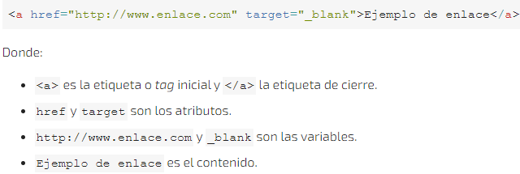

OVI:Estructura básica de html5 (etiquetas, atributos y valores).
¿Qué es un atributo?
Son la forma para que el diseñador web pueda definir propiedades de un elemento. Con propiedades que pueden cambiar con cada navegador, que pueden interpretar las etiquetas y sus atributos. Y dependiendo de su configuración y el navegador que se use pueden verse diferente a los usuarios finales.
Ejemplo de una estructura en HTML:

Figura 4. Ejemplo de Estructura en HTML. Recuperado de: https://www.arkaitzgarro.com/xhtml/capitulo-3.html
Cada uno se pude usar para diferentes acciones y darle unos valores específicos, que pueden personalizar, y dar su funcionamiento a cada parte de la página web. Un ejemplo es darle un tamaño exacto a cada sección (Se recomienda hacer esto con CSS), hacer tablas para separar u organizar la información, permitir el uso de formularios, colocar botones, entre otros usos que se pueden ver en cualquier pagina que visite cada día.
Como se puede ver en la imagen 3, hay etiquetas específicas para cada sección de una página, se pueden usar etiquetas DIV todo el rato, pero es mejor usar estándar actual (HTML5) con cada una de las diferentes etiquetas, para que no se vea saturada de la etiqueta DIV y sea más fácil entender como se programó y configuró el esquema de cada pagina web.